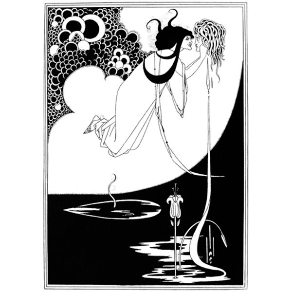
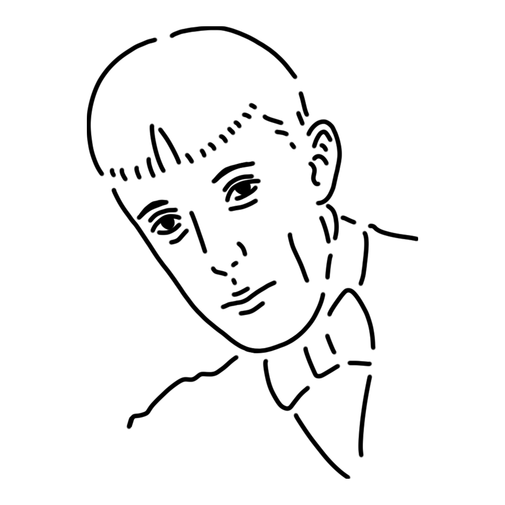

Muse was a 19th-century British illustrator. Her destructive and sensual works, based on plays and other subjects, helped popularize aestheticism. She was also a highly obsessive person, and once she fell in love, she would cling to the ends of the earth.
England
"I have kissed your mouth, Jokannan"
"Siegfried"
"Yellow Book" etc.

This is one of the illustrations for the play "Salome" by the British author Oscar Wilde.
It depicts the climax scene in which Salome, the daughter of King Elodea, kisses the neck of the prophet Jokanaan (John), and is often referred to as "I Kiss You, Jokanaan."
Though in black and white, it is a seductive work that lives up to its reputation as an aesthetic work.
Year
1893
Medium
Ink, paper
Dimension
34.2 x 27.2 cm
Collection
Victoria and Albert Museum (UK)

A leading illustrator of late 19th-century Britain and a symbol of fin-de-siècle art (Decadence). He excelled at decadent and provocative expressions, often in black and white, as seen in his illustrations for Salomé.
Though he died young from tuberculosis, the works he left behind in his 25 years had a profound influence on modern illustration.
In his early days, he worked as a company employee while teaching himself to draw on the side, making him a so-called part-time artist.
Aubrey Vincent Beardsley
August 21, 1872
March 16, 1898(aged 25)